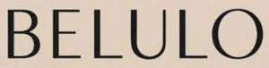

Trade Mark Journal No.2025/044 31 October 2025
UK00004268444 24 September 2025 (3,9,14,18,21,24,25,35,41,42,44)
Mark 1
BELULO
Mark 2

- Class 3
- Non-medicated cosmetics and toiletry preparations; Cosmetics; Toiletries; Hair preparations and treatments; Hair lotions; Hair shampoos; Hair conditioners; Hair dye; Hair tonics; Hair oils; Hair gels; Body cleaning and beauty care preparations; Sun tanning and after sun preparations; Skin toners; Body gels; Body lotions; Body balms; Body butters and polishes; Body creams and moisturisers; non-medicated Foot cream preparations; Hand cream; Facial preparations and treatments; Face masks; Face creams; Face lotions; Skin cleansers; Face wipes; Face wipes impregnated with cosmetic solutions; Skin exfoliants; Skin moisturisers; Skin creams and lotions; Self-tan lotions and skin bronzers; Lip balms; Non-medicated herbal preparations for the care of the skin; Cosmetics contained in hampers; Bath preparations; Bath milk; Bath salts; Bath gel; Soaps and gels; Hand gel; Make-up; Foundation; Mascara; Blush; Eye shadow; Lipstick; Lipgloss; Eye liner; Preparations for removing cosmetics; Perfumery; Essential oils; aromatherapy oils; Nail polish; Nail polish remover.
- Class 9
- Spectacles; Sunglasses; Eyeglasses; Frames for spectacles and sunglasses; Chains for spectacles and for sunglasses; Cases for spectacles and sunglasses; Mobile phone cases; Mobile phone accessories; Mobile applications relating to fashion and beauty; Smart watches.
- Class 14
- Jewellery; Cuff links; Earrings; Bracelets; Brooches; Jewellery Chains; Key rings; Necklaces; Pins being jewellery; Rings; Bangles; ; Pendants; Lockets; Watches; Watch bands, straps for wristwatches, watch straps.
- Class 18
- Leather and imitations of leather; Leather pouches; Leather straps; Leather boxes; Leather bags; Bags; Luggage and carrying bags; Weekend bags; Cosmetic bags; Wash bags for carrying toiletries; Handbags; Shoulder bags; Carrying bags; Cross-body bags; Duffle bags; Leather bags; Travel bags; Suitcases; Work bags; Bum bags; Belt bags and hip bags; Clutch bags; Tote bags; Sports bags; Sports packs; All-purpose sport bags; Gym bags; Barrel bags; Backpacks; Rucksacks; Camping bags; Hiking bags; Wallets; Purses; Pouches; Umbrellas; Parasols.
- Class 21
- Cosmetic utensils; Combs and sponges; Brushes.
- Class 24
- Textiles; bed sheets; cases and coverings for bedding; towels; fabric coverings for furniture; household linens.
- Class 25
- Clothing, footwear, headwear; Logo-branded clothing, footwear and headgear; T-shirts; Logo-branded t-shirts; Printed t-shirts; Sweatshirts; Logo-branded sweatshirts; Hooded sweatshirts; Hooded zip-ups; Pullovers; Half-zip pullovers; Shirts; Button-up shirts; Long-sleeved shirts; Polo shirts; Long sleeved polo shirts; Under shirts; Tops; Tank tops; Crop tops; Vest tops; Jersey tops; Camisoles; Blouses; Dress shirts; Knitwear; Jerseys; Sleeveless jerseys; Buttoned sweatshirts; Crew-neck sweatshirts; Sweaters; Jumpers; Cardigans; Vests; Gilets; Tracksuits; Tracksuit tops; Jackets; Coats; Blazers; Sports jackets; Puffer jackets; Varsity jackets; Bomber jackets; Golf and ski jackets; Trench coats; Raincoats; Denim jackets; Leather jackets; Jackets made of artificial leather; Quilted jackets; Hunting jackets; Waistcoats; Rainproof clothing; Sportswear; Loungewear; Dresses; Trousers; Tracksuit bottoms; Suit pants; Jeans; Sweatpants; Joggers; Chino trousers; Shorts; Denim shorts; Sweat shorts; Skirts; Leggings; Swimwear; Beachwear; Sportswear; Sleepwear; Underwear; Lingerie; Night gowns; Pyjamas; Bathrobes; Shoes; Boots; Trainers; Sneakers; Slippers; Sandals; Socks; Stockings; Tights; Hoods; Caps; Baseball caps; Flat caps; Hats; Beanies; Bandanas; Neckerchiefs; Balaclavas; Berets; Cloche hats; Bucket hats; Neckwear; Neckties; Ties; Headbands; Visors; Ear warmers; Ear bands; Earmuffs; Scarves; Shawls; Gloves; Mittens; Belts.
- Class 35
- Advertising, marketing and promotional services in relation to fashion and beauty; Retail and online retail services in relation to Non-medicated cosmetics and toiletry preparations, Cosmetics, Toiletries, Hair preparations and treatments, Hair lotions, Hair shampoos, Hair conditioners, Hair dye, Hair tonics, Hair oils, Hair gels, Body cleaning and beauty care preparations, Ointments, Sun tanning and after sun preparations, Skin toners, Body gels, Body lotions, Body balms, Body butters and polishes, Body creams and moisturisers, Foot cream, Hand cream, Facial preparations and treatments, Face masks, Face creams, Face lotions, Skin cleansers, Face wipes, Face wipes impregnated with cosmetic solutions, Skin exfoliants, Skin moisturisers, Skin creams and lotions, Self-tan lotions and skin bronzers, Lip balms, Non-medicated herbal preparations for the care of the skin, Cosmetics contained in hampers, Bath preparations, Bath milk, Bath salts, Bath gel, Soaps and gels, Hand gel, Make-up, Foundation, Mascara, Blush, Eye shadow, Lipstick, Lipgloss, Eye liner, Preparations for removing cosmetics, Perfumery, Essential oils, Essential and aromatherapy oils, Nail polish, Nail polish remover, Spectacles, Sunglasses, Eyeglasses, Frames for spectacles and sunglasses, Chains for spectacles and for sunglasses, Cases for spectacles and sunglasses, Mobile phone cases, Mobile phone accessories, Mobile applications, Mobile applications relating to fashion and beauty, Smart watches, Jewellery, Cuff links, Earrings, Bracelets, Brooches, Chains, Key rings, Necklaces, Pins, Rings, Bangles, Charms (jewellery), Pendants, Lockets, Watches, Watch bands, straps for wristwatches, watch straps, Leather and imitations of leather, Leather pouches, Leather straps, Leather boxes, Leather bags, Bags, Luggage and carrying bags, Shopping bags, Weekend bags, Cosmetic bags, Wash bags for carrying toiletries, Handbags, Shoulder bags, Carrying bags, Cross-body bags, Duffle bags, Leather bags, Travel bags, Suitcases, Work bags, Bum bags, Belt bags and hip bags, Clutch bags, Tote bags, Sports bags, Sports packs, All-purpose sport bags, Gym bags, Barrel bags, Backpacks, Rucksacks, Camping bags, Hiking bags, Wallets, Purses, Pouches, Umbrellas, Parasols, Cosmetic utensils, Combs and sponges, Brushes, Textiles, bedding, sheets, cases and coverings for bedding, towels, fabric coverings for furniture, household linens, Clothing, footwear, headwear, Logo-branded clothing, footwear and headgear, T-shirts, Logo-branded t-shirts, Printed t-shirts, Sweatshirts, Logo-branded sweatshirts, Hooded sweatshirts, Hooded zip-ups, Pullovers, Half-zip pullovers, Shirts, Button-up shirts, Long-sleeved shirts, Polo shirts, Long sleeved polo shirts, Under shirts, Tops, Tank tops, Crop tops, Vest tops, Jersey tops, Camisoles, Blouses, Dress shirts, Knitwear, Jerseys, Sleeveless jerseys, Buttoned sweatshirts, Crew-neck sweatshirts, Sweaters, Jumpers, Cardigans, Vests, Gilets, Tracksuits, Tracksuit tops, Jackets, Coats, Blazers, Sports jackets, Puffer jackets, Varsity jackets, Bomber jackets, Golf and ski jackets, Trench coats, Raincoats, Denim jackets, Leather jackets, Jackets made of artificial leather, Quilted jackets, Hunting jackets, Waistcoats, Rainproof clothing, Sportswear, Loungewear, Dresses, Trousers, Tracksuit bottoms, Suit pants, Jeans, Sweatpants, Joggers, Chino trousers, Shorts, Denim shorts, Sweat shorts, Skirts, Leggings, Swimwear, Beachwear, Sportswear, Sleepwear, Underwear, Lingerie, Night gowns, Pyjamas, Bathrobes, Shoes, Boots, Trainers, Sneakers, Slippers, Sandals, Socks, Stockings, Tights, Hoods, Caps, Baseball caps, Flat caps, Hats, Beanies, Bandanas, Neckerchiefs, Balaclavas, Berets, Cloche hats, Bucket hats, Neckwear, Neckties, Ties, Headbands, Visors, Ear warmers, Ear bands, Earmuffs, Scarves, Shawls, Gloves, Mittens, Belts.
- Class 41
- Events services in relation to fashion and beauty; Entertainment services; Entertainment in the nature of fashion shows; Organizing and presenting displays of entertainment relating to style and fashion; Organisation of fashion shows; Conducting entertainment events; Conducting modelling events and fashion shows; Production and organisation of live stage shows and performances; Production, distribution and exhibition of videos; Organisation of modelling activities and fashion shows.
- Class 42
- Design of clothing; Dress designs; Jewellery design; Fashion design services; Fashion design consulting services; Design of fashion accessories; Clothing design services.
- Class 44
- Beauty care; Beauty care services; Hairdressing services; Nail care services; Make-up services; Hygienic and beauty care for human beings, consultancy in the field of beauty, skin care and personal care, beauty salons, hairdressing salons; Medical services; Medical aesthetics clinics which will offer a range of non surgical cosmetic treatments to include anti-wrinkle injections, dermal fillers, chemical skin peels, microdermabrasion, dermaroller , facials, laser treatment.
Matthew Henry
Representative: Trade Mark Wizards Limited